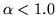
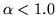
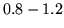
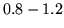

A simple speaker normalisation technique can be implemented by
modifying the filterbank analysis described in the previous section.
Vocal tract length normalisation (VTLN) aims to compensate for the
fact that speakers have vocal tracts of different sizes. VTLN can be
implemented by warping the frequency axis in the filterbank analysis.
In HTK simple linear frequency warping is supported. The warping
factor  is controlled by the configuration variable
WARPFREQ . Here values of
 correspond to a compression of the frequency axis. As
the warping would lead to some filters being placed outside the
analysis frequency range, the simple linear warping function is
modified at the upper and lower boundaries. The result is that the
lower boundary frequency of the analysis
(LOFREQ ) and the upper
boundary frequency (HIFREQ )
are always mapped to themselves. The regions in which the warping
function deviates from the linear warping with factor
is controlled by the configuration variable
WARPFREQ . Here values of
 correspond to a compression of the frequency axis. As
the warping would lead to some filters being placed outside the
analysis frequency range, the simple linear warping function is
modified at the upper and lower boundaries. The result is that the
lower boundary frequency of the analysis
(LOFREQ ) and the upper
boundary frequency (HIFREQ )
are always mapped to themselves. The regions in which the warping
function deviates from the linear warping with factor  are
controlled with the two configuration variables
(WARPLCUTOFF ) and
(WARPUCUTOFF ).
Figure [*] shows the overall shape of the resulting
piece-wise linear warping functions.
are
controlled with the two configuration variables
(WARPLCUTOFF ) and
(WARPUCUTOFF ).
Figure [*] shows the overall shape of the resulting
piece-wise linear warping functions.
The warping factor  can for example be found using a search
procedure that compares likelihoods at different warping factors. A
typical procedure would involve recognising an utterance with
can for example be found using a search
procedure that compares likelihoods at different warping factors. A
typical procedure would involve recognising an utterance with
 and then performing forced alignment of the hypothesis
for all warping factors in the range . The factor that
gives the highest likelihood is selected as the final warping factor.
Instead of estimating a separate warping factor for each utterance,
large units can be used by for example estimating only one
and then performing forced alignment of the hypothesis
for all warping factors in the range . The factor that
gives the highest likelihood is selected as the final warping factor.
Instead of estimating a separate warping factor for each utterance,
large units can be used by for example estimating only one  per speaker.
per speaker.
Vocal tract length normalisation can be applied in testing as well as in training the acoustic models.